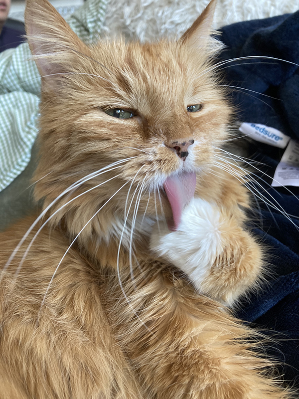

Reese von West (June 2004 - May 2022)
fearless climber of ladders, cat king of 5W, famously photogenic cat model, unstoppable butter fiend, cuddle demon, forever kitty of my heart
Original 2020 draft of my cat crisis care guide, largely focusing on inappetence and CKD home care.
As part of my coping process, I'm working on extending the guide with all I've learned in the last 1.5 years, and how to deal with end of life planning. Will have more here soon.
If my work has helped you, you can support me on Patreon or Ko-fi.